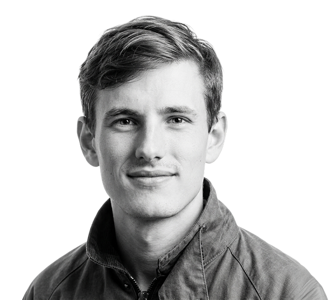
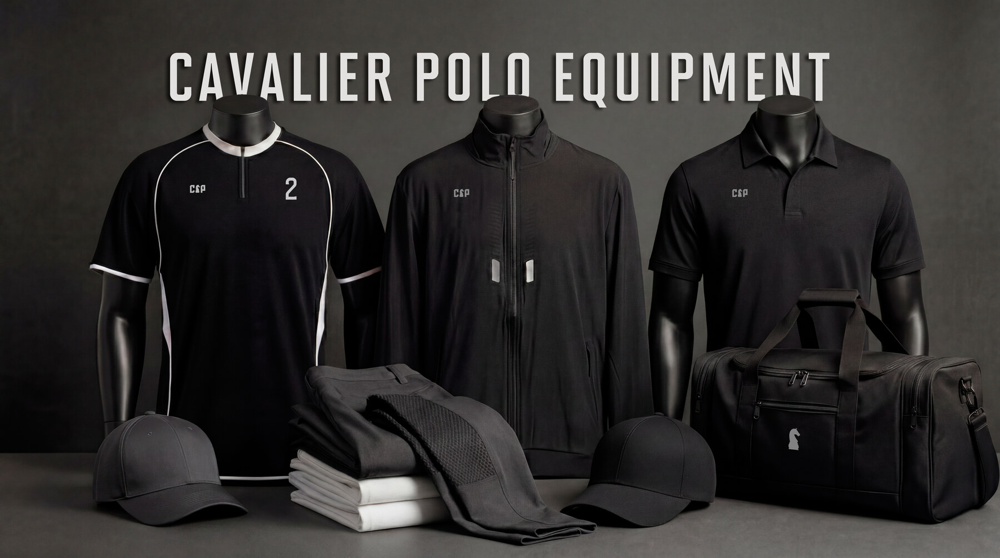
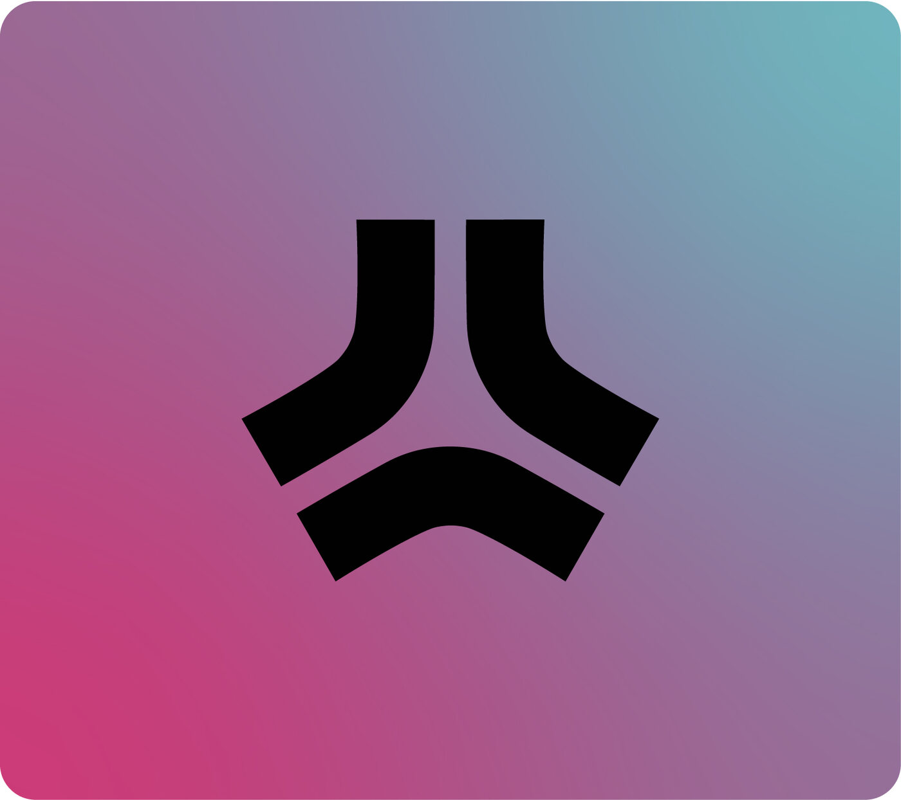
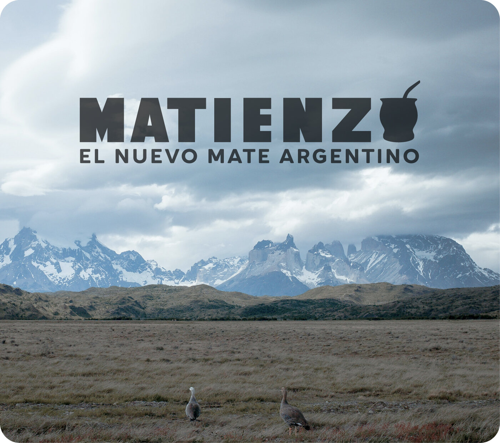
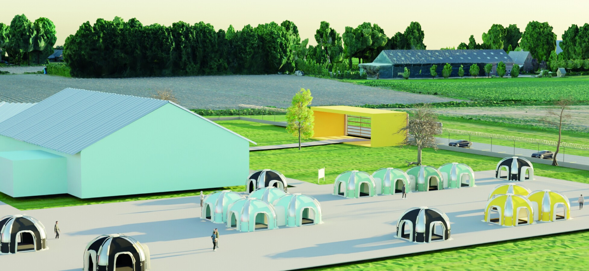
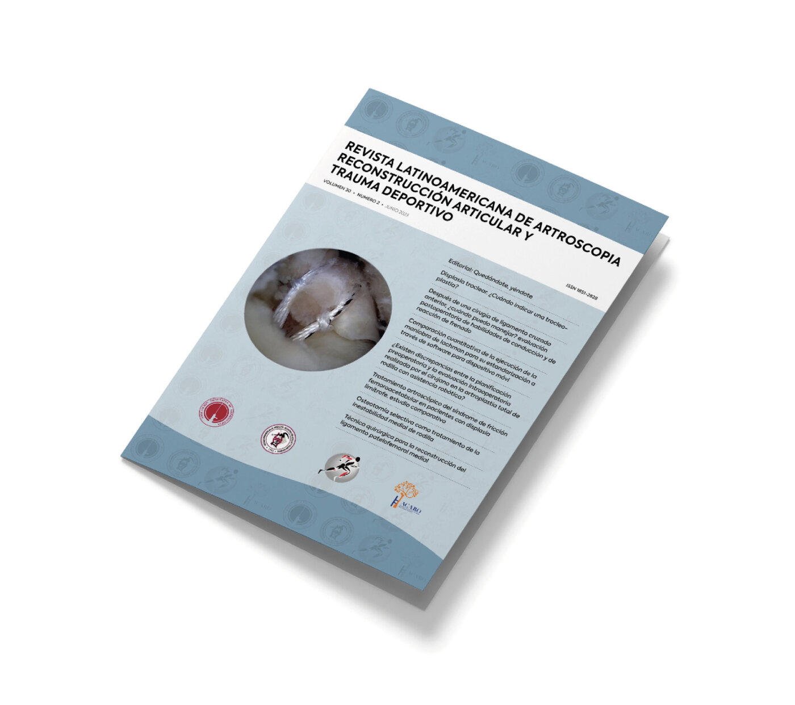
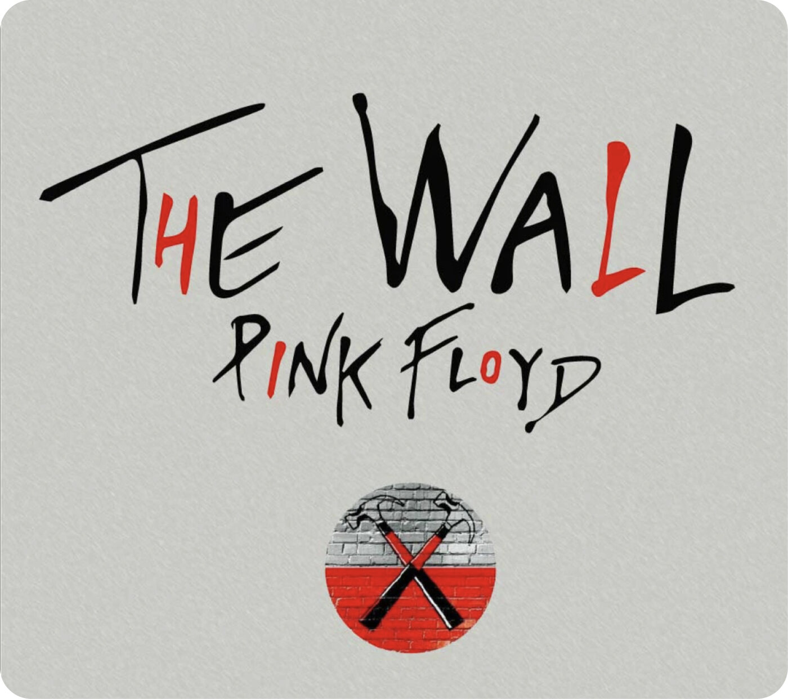

I turn ideas into experiences people actually enjoy using.
I focus on building intuitive websites, digital products and visual identities — thoughtful, human-centered design that just feels right.

Turning complex problems into clear, functional and user-centered solutions by balancing user needs, business goals and thoughtful design decisions.
Crafting polished, consistent and intuitive experiences through careful attention to visual quality, usability and user-centered designs.
Working closely with clients and multidisciplinary teams, valuing different perspectives to refine ideas and achieve the best possible outcome.
AI is used to accelerate research, exploration and prototyping, while design decisions, strategy and creative direction remain human-led.
A selection of projects across web, product, branding and editorial design.
A dense research archive doesn't tell a story on its own — it just accumulates. Lake Poopó turns years of research into a five-chapter editorial site, giving readers a clear structure, interface and visual identity to follow the story from start to finish.
A digital product studio that builds SaaS for other businesses still needs to look the part itself. Puzzles is the brand identity and website built to prove it — a visual system and live site that carry the same product thinking the studio sells to its clients.
Healthcare professionals shouldn't waste time navigating fragmented systems. MediFlow is a self-directed concept for a B2B platform that centralizes clinic operations into a single digital tool, built to explore how teams could reduce operational friction and gain real-time visibility across their daily workflows.
For many older adults, online banking can feel intimidating. VinculApp is a UX/UI prototype designed to make everyday banking more accessible while allowing trusted family members to provide secure assistance from anywhere.

In-house client work: logos, brand systems and custom team apparel for 190+ international clients across high-profile polo tournaments, designed and delivered under tight deadlines and peak-season demand.



When floods strike, the challenge goes beyond evacuation. An interdisciplinary design project that transforms public spaces into temporary resilience hubs, providing shelter, essential services and community support during emergencies.


I'm actively looking for my next role — somewhere I can learn from a strong team and grow into a designer worth keeping around.